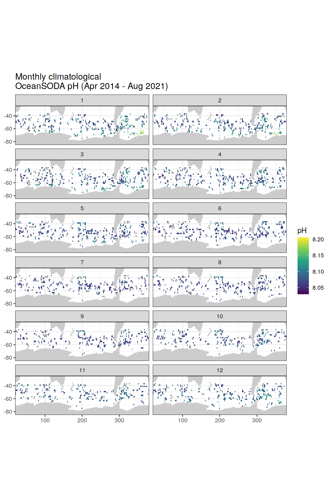
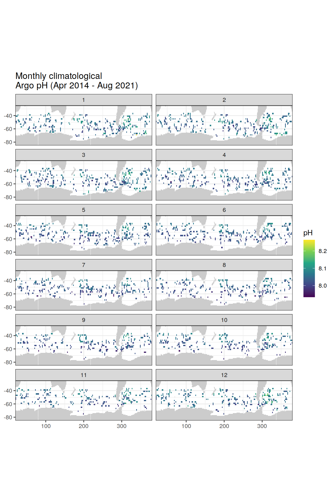
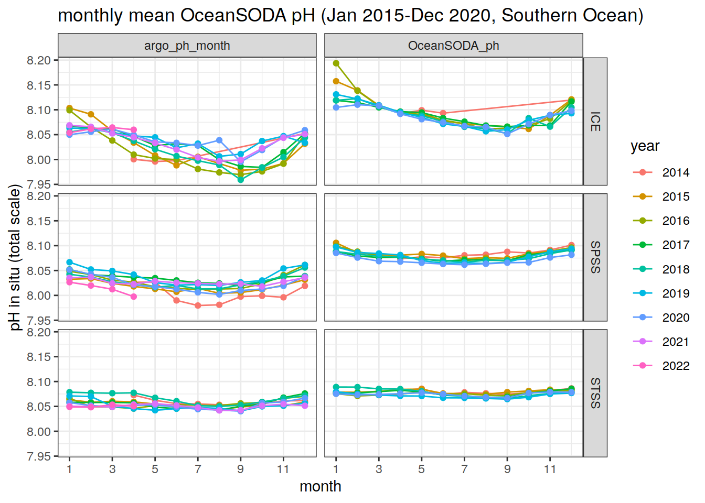
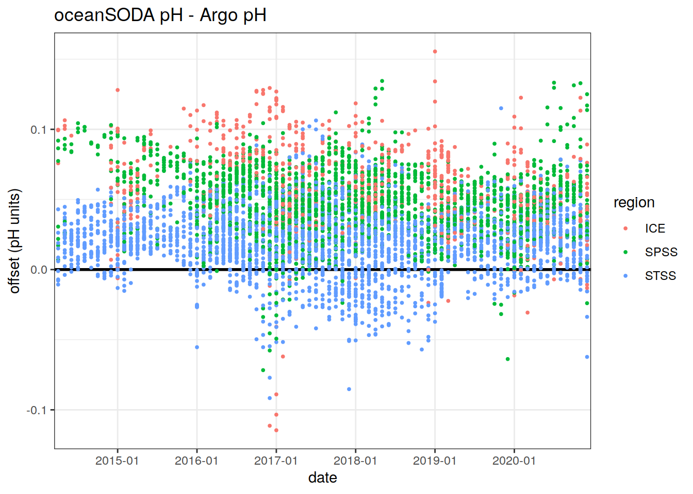
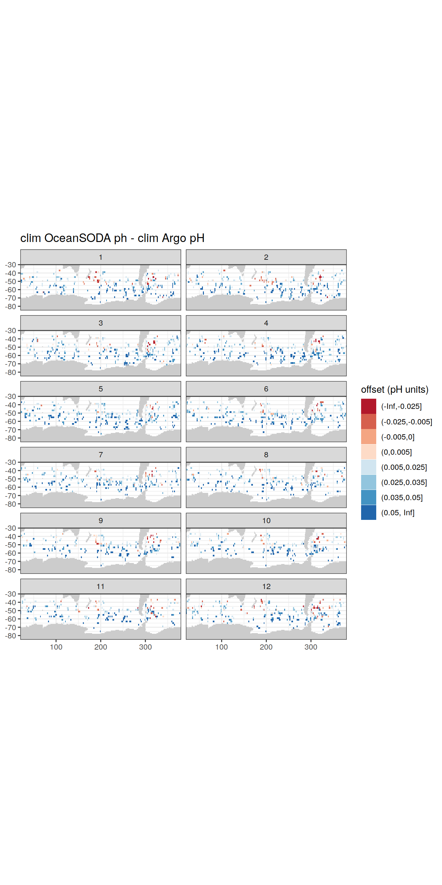

OceanSODA-Argo pH
Pasqualina Vonlanthen & Jens Daniel Müller
30 November, 2021
Last updated: 2021-11-30
Checks: 7 0
Knit directory: bgc_argo_r_argodata/
This reproducible R Markdown analysis was created with workflowr (version 1.6.2). The Checks tab describes the reproducibility checks that were applied when the results were created. The Past versions tab lists the development history.
Great! Since the R Markdown file has been committed to the Git repository, you know the exact version of the code that produced these results.
Great job! The global environment was empty. Objects defined in the global environment can affect the analysis in your R Markdown file in unknown ways. For reproduciblity it’s best to always run the code in an empty environment.
The command set.seed(20211008) was run prior to running the code in the R Markdown file. Setting a seed ensures that any results that rely on randomness, e.g. subsampling or permutations, are reproducible.
Great job! Recording the operating system, R version, and package versions is critical for reproducibility.
Nice! There were no cached chunks for this analysis, so you can be confident that you successfully produced the results during this run.
Great job! Using relative paths to the files within your workflowr project makes it easier to run your code on other machines.
Great! You are using Git for version control. Tracking code development and connecting the code version to the results is critical for reproducibility.
The results in this page were generated with repository version 8392c32. See the Past versions tab to see a history of the changes made to the R Markdown and HTML files.
Note that you need to be careful to ensure that all relevant files for the analysis have been committed to Git prior to generating the results (you can use wflow_publish or wflow_git_commit). workflowr only checks the R Markdown file, but you know if there are other scripts or data files that it depends on. Below is the status of the Git repository when the results were generated:
Ignored files:
Ignored: .Rhistory
Ignored: .Rproj.user/
Ignored: output/
Note that any generated files, e.g. HTML, png, CSS, etc., are not included in this status report because it is ok for generated content to have uncommitted changes.
These are the previous versions of the repository in which changes were made to the R Markdown (analysis/oceanSODA_argo.Rmd) and HTML (docs/oceanSODA_argo.html) files. If you’ve configured a remote Git repository (see ?wflow_git_remote), click on the hyperlinks in the table below to view the files as they were in that past version.
| File | Version | Author | Date | Message |
|---|---|---|---|---|
| Rmd | 8392c32 | jens-daniel-mueller | 2021-11-30 | code review |
| html | 3dc093a | pasqualina-vonlanthendinenna | 2021-11-30 | Build site. |
| Rmd | 4b89d69 | pasqualina-vonlanthendinenna | 2021-11-30 | added Argo plots to OceanSODA page |
| html | 930ea26 | pasqualina-vonlanthendinenna | 2021-11-26 | Build site. |
| html | e09c60b | pasqualina-vonlanthendinenna | 2021-11-26 | Build site. |
| html | 1305d6b | pasqualina-vonlanthendinenna | 2021-11-26 | Build site. |
| html | 5e2b8a5 | pasqualina-vonlanthendinenna | 2021-11-26 | Build site. |
| html | 3df4daf | pasqualina-vonlanthendinenna | 2021-11-26 | Build site. |
| Rmd | 9b5df99 | pasqualina-vonlanthendinenna | 2021-11-26 | added oceanSODA page |
Task
Compare BGC-Argo pH data to pH from the OceanSODA surface data product
theme_set(theme_bw())Load data
Load in surface Argo pH and the OceanSODA pH, gridded to 1x1º
path_argo <- '/nfs/kryo/work/updata/bgc_argo_r_argodata'
path_argo_preprocessed <- paste0(path_argo, "/preprocessed_bgc_data")
path_emlr_utilities <- "/nfs/kryo/work/jenmueller/emlr_cant/utilities/files/"# load in OceanSODA data and Argo pH
OceanSODA <- read_rds(file = paste0(path_argo_preprocessed, "/OceanSODA.rds"))
ph_surface_1x1 <- read_rds(file = paste0(path_argo_preprocessed, "/ph_surface_1x1.rds"))
# for plotting later, load in region and coastline information
region_masks_all_seamask_2x2 <- read_rds(file = paste0(
path_argo_preprocessed, "/region_masks_all_seamask_2x2.rds"))
region_masks_all_2x2 <- read_rds(file = paste0(path_argo_preprocessed, "/region_masks_all_2x2.rds"))
region_masks_all_1x1 <- read_rds(file = paste0(path_argo_preprocessed, "/region_masks_all_1x1.rds"))# read in the map from updata
map <-
read_rds(paste(path_emlr_utilities,
"map_landmask_WOA18.rds",
sep = ""))Harmonise the two datasets
Calculate monthly average pH for Argo pH for each lon/lat grid, centered on the 15th of each month, to match the format of OceanSODA
argo_monthly_surface_ph_1x1 <- ph_surface_1x1 %>%
# mutate(date = format_ISO8601(date, precision = "ym")) %>%
mutate(day = rep(15, length(date)), # change the date format to match OceanSODA
.after = month) %>%
unite(year,
month,
day,
col = date,
sep = '-',
remove = FALSE) %>%
mutate(date = ymd(date), .before = year) %>%
group_by(year, month, date, lat, lon) %>%
summarise(
argo_ph_month = mean(ph_in_situ_total_adjusted, na.rm = TRUE),
# calculate monthly mean argo parameters
argo_temp_month = mean(temp_adjusted, na.rm = TRUE),
argo_psal_month = mean(psal_adjusted, na.rm = TRUE)
) %>%
ungroup() %>%
select(
date,
year,
month,
# day,
lon,
lat,
# float_serial_no,
# cycle_number,
argo_temp_month,
argo_psal_month,
argo_ph_month,
# coast,
# region,
# value
)`summarise()` has grouped output by 'year', 'month', 'date', 'lat'. You can override using the `.groups` argument.Join the two datasets
argo_OceanSODA_1x1 <- left_join(argo_monthly_surface_ph_1x1, OceanSODA) %>%
rename(OceanSODA_ph = ph_total,
OceanSODA_ph_error = ph_total_uncert)Joining, by = c("date", "year", "lon", "lat")# argo_OceanSODA_1x1 %>%
# write_rds(file = paste0(path_argo_preprocessed, "/argo_OceanSODA_1x1.rds"))Southern Ocean surface pH
The focus here is on Southern Ocean surface pH, south of 30ºS, as defined in the RECCAP biome regions
region_masks_all_1x1_SO <- region_masks_all_1x1 %>%
filter(region == 'southern',
value != 0)
# keep only Southern Ocean data
argo_OceanSODA_SO_1x1 <-
inner_join(region_masks_all_1x1_SO, argo_OceanSODA_1x1)Joining, by = c("lon", "lat")Monthly climatological OceanSODA pH
Map monthly mean pH from the OceanSODA data product
Climatological OceanSODA pH
# calculate average monthly pH between April 2014 and August 2021
argo_OceanSODA_SO_clim_1x1 <- argo_OceanSODA_SO_1x1 %>%
group_by(lon, lat, month) %>%
summarise(
clim_OceanSODA_ph = mean(OceanSODA_ph, na.rm = TRUE),
clim_argo_ph = mean(argo_ph_month, na.rm = TRUE),
offset_clim = clim_OceanSODA_ph - clim_argo_ph
) %>%
ungroup()`summarise()` has grouped output by 'lon', 'lat'. You can override using the `.groups` argument.argo_OceanSODA_SO_clim_2x2 <- argo_OceanSODA_SO_clim_1x1 %>%
mutate(
lat = cut(lat, seq(-90, 90, 2), seq(-89, 89, 2)),
lat = as.numeric(as.character(lat)),
lon = cut(lon, seq(20, 380, 2), seq(21, 379, 2)),
lon = as.numeric(as.character(lon))
) %>%
group_by(lon, lat, month) %>%
summarise(
clim_OceanSODA_ph = mean(clim_OceanSODA_ph, na.rm = TRUE),
clim_argo_ph = mean(clim_argo_ph, na.rm = TRUE),
offset_clim = mean(offset_clim, na.rm = TRUE)
) %>%
ungroup()`summarise()` has grouped output by 'lon', 'lat'. You can override using the `.groups` argument.map +
geom_tile(data = argo_OceanSODA_SO_clim_2x2,
aes(lon, lat, fill = clim_OceanSODA_ph)) +
lims(y = c(-85, -25)) +
scale_fill_viridis_c() +
labs(x = 'lon',
y = 'lat',
fill = 'pH',
title = 'Monthly climatological \nOceanSODA pH (Apr 2014 - Aug 2021)') +
theme(legend.position = 'right') +
facet_wrap(~month, ncol = 2)Warning: Raster pixels are placed at uneven vertical intervals and will be
shifted. Consider using geom_tile() instead.Warning: Removed 153708 rows containing missing values (geom_raster).
# plot the climatological monthly OceanSODA pH on a polar projection
basemap(limits = -32, data = argo_OceanSODA_SO_clim_2x2) + # change to polar projection
geom_spatial_tile(data = argo_OceanSODA_SO_clim_2x2,
aes(x = lon,
y = lat,
fill = clim_OceanSODA_ph),
linejoin = 'mitre',
col = 'transparent',
detail = 60)+
scale_fill_viridis_c()+
theme(legend.position = 'right')+
labs(x = 'lon',
y = 'lat',
fill = 'pH',
title = 'monthly climatological \nOceanSODA pH (Apr 2014 - Aug 2021)')+
facet_wrap(~month, ncol = 2)Assuming `crs = 4326` in stat_spatial_rect()
Assuming `crs = 4326` in stat_spatial_rect()
Assuming `crs = 4326` in stat_spatial_rect()
Assuming `crs = 4326` in stat_spatial_rect()
Assuming `crs = 4326` in stat_spatial_rect()
Assuming `crs = 4326` in stat_spatial_rect()
Assuming `crs = 4326` in stat_spatial_rect()
Assuming `crs = 4326` in stat_spatial_rect()
Assuming `crs = 4326` in stat_spatial_rect()
Assuming `crs = 4326` in stat_spatial_rect()
Assuming `crs = 4326` in stat_spatial_rect()
Assuming `crs = 4326` in stat_spatial_rect()
Climatological monthly Argo pH
Climatological Argo pH
map +
geom_tile(data = argo_OceanSODA_SO_clim_2x2,
aes(lon, lat, fill = clim_argo_ph)) +
lims(y = c(-85, -25)) +
scale_fill_viridis_c() +
labs(x = 'lon',
y = 'lat',
fill = 'pH',
title = 'Monthly climatological \nArgo pH (Apr 2014 - Aug 2021)') +
theme(legend.position = 'right') +
facet_wrap(~month, ncol = 2)Warning: Raster pixels are placed at uneven vertical intervals and will be
shifted. Consider using geom_tile() instead.Warning: Removed 153708 rows containing missing values (geom_raster).
| Version | Author | Date |
|---|---|---|
| 3dc093a | pasqualina-vonlanthendinenna | 2021-11-30 |
basemap(limits = -32, data = argo_OceanSODA_SO_clim_2x2) + # change to polar projection
geom_spatial_tile(data = argo_OceanSODA_SO_clim_2x2,
aes(x = lon,
y = lat,
fill = clim_argo_ph),
linejoin = 'mitre',
col = 'transparent',
detail = 60)+
scale_fill_viridis_c()+
theme(legend.position = 'right')+
labs(x = 'lon',
y = 'lat',
fill = 'pH',
title = 'monthly climatological \nArgo pH (Apr 2014 - Aug 2021)')+
facet_wrap(~month, ncol = 2)Assuming `crs = 4326` in stat_spatial_rect()
Assuming `crs = 4326` in stat_spatial_rect()
Assuming `crs = 4326` in stat_spatial_rect()
Assuming `crs = 4326` in stat_spatial_rect()
Assuming `crs = 4326` in stat_spatial_rect()
Assuming `crs = 4326` in stat_spatial_rect()
Assuming `crs = 4326` in stat_spatial_rect()
Assuming `crs = 4326` in stat_spatial_rect()
Assuming `crs = 4326` in stat_spatial_rect()
Assuming `crs = 4326` in stat_spatial_rect()
Assuming `crs = 4326` in stat_spatial_rect()
Assuming `crs = 4326` in stat_spatial_rect()
| Version | Author | Date |
|---|---|---|
| 3dc093a | pasqualina-vonlanthendinenna | 2021-11-30 |
Timeseries of monthly OceanSODA pH
Evolution of monthly surface pH, for the three Southern Ocean RECCAP regions
map +
geom_raster(data = region_masks_all_seamask_2x2 %>%
filter(seamask == 0),
aes(x = lon, y = lat)) +
geom_raster(data = region_masks_all_2x2 %>%
filter(region == 'southern',
value != 0),
aes(x = lon,
y = lat,
fill = value)) +
labs(title = 'Southern Ocean RECCAP regions',
fill = 'region')Warning: Raster pixels are placed at uneven vertical intervals and will be
shifted. Consider using geom_tile() instead.
Warning: Raster pixels are placed at uneven vertical intervals and will be
shifted. Consider using geom_tile() instead.
| Version | Author | Date |
|---|---|---|
| 3df4daf | pasqualina-vonlanthendinenna | 2021-11-26 |
# plot timeseries of monthly OceanSODA pH
argo_OceanSODA_SO_1x1_clim_regional <- argo_OceanSODA_SO_1x1 %>%
select(year, month, value, OceanSODA_ph, argo_ph_month) %>%
pivot_longer(c(OceanSODA_ph,argo_ph_month),
values_to = "ph",
names_to = "data_source") %>%
group_by(year, month, value, data_source) %>% # compute regional mean OceanSODA pH for the three biomes
summarise(ph = mean(ph, na.rm = TRUE)) %>%
ungroup()`summarise()` has grouped output by 'year', 'month', 'value'. You can override using the `.groups` argument.argo_OceanSODA_SO_1x1_clim_regional %>%
ggplot(aes(x = year,
y = ph,
col = value)) +
facet_grid(month ~ data_source) +
geom_line() +
geom_point() +
labs(x = 'year',
y = 'pH in situ (total scale)',
title = 'monthly mean OceanSODA pH (Apr 2014-Aug 2021, Southern Ocean)',
col = 'region')Warning: Removed 23 rows containing missing values (geom_point).
| Version | Author | Date |
|---|---|---|
| 3df4daf | pasqualina-vonlanthendinenna | 2021-11-26 |
argo_OceanSODA_SO_1x1_clim_regional %>%
filter(year != 2014,
year != 2021,
value != 0) %>%
ggplot(aes(x = month,
y = ph,
group = year,
col = as.character(year)))+
geom_line()+
geom_point()+
scale_x_continuous(breaks = seq(1, 12, 2))+
facet_grid(value~data_source)+
labs(x = 'month',
y = 'pH in situ (total scale)',
title = 'monthly mean OceanSODA pH (Jan 2015-Dec 2020, Southern Ocean)',
col = 'year')
| Version | Author | Date |
|---|---|---|
| 3df4daf | pasqualina-vonlanthendinenna | 2021-11-26 |
Comparison between Argo and OceanSODA pH
Calculate the difference between Argo and OceanSODA pH values
Offset between in-situ monthly pH:
argo_OceanSODA_SO_1x1 <- argo_OceanSODA_SO_1x1 %>%
mutate(offset = OceanSODA_ph - argo_ph_month)
argo_OceanSODA_SO_1x1 %>%
drop_na() %>%
ggplot() +
geom_hline(yintercept = 0, size = 1)+
geom_point(aes(x = date, y = offset, col = value), size = 0.7, pch = 19) +
labs(title = 'oceanSODA pH - Argo pH',
x = 'date',
y = 'offset (pH units)',
col = 'region')
Offset between climatological Argo and climatological OceanSODA pH:
# Offset between climatological argo and climatological OceanSODA pH
argo_OceanSODA_SO_clim_1x1 %>%
drop_na() %>%
ggplot() +
geom_point(aes(x = month, y = offset_clim), size = 0.7, pch = 19) +
geom_hline(yintercept = 0, size = 1, col = 'red')+
scale_y_continuous(breaks = seq(1, 12, 1))+
labs(title = 'clim oceanSODA pH - clim Argo pH',
x = 'month',
y = 'offset (pH units)',
col = 'region')
# plot the offsets on a map of the Southern Ocean
map +
geom_tile(data = argo_OceanSODA_SO_clim_2x2,
aes(lon, lat, fill = offset_clim)) +
lims(y = c(-85, -30)) +
scale_fill_divergent(high = 'red', low = 'blue', midpoint = 0, mid="grey50") +
labs(x = 'lon',
y = 'lat',
fill = 'offset (pH units)',
title = 'clim OceanSODA ph - clim Argo pH') +
theme(legend.position = 'right')+
facet_wrap(~month, ncol = 2)Warning: Raster pixels are placed at uneven vertical intervals and will be
shifted. Consider using geom_tile() instead.Warning: Removed 158580 rows containing missing values (geom_raster).
basemap(limits = -32, data = argo_OceanSODA_SO_clim_2x2) + # change to polar projection
geom_spatial_tile(data = argo_OceanSODA_SO_clim_2x2,
aes(x = lon,
y = lat,
fill = offset_clim),
linejoin = 'mitre',
col = 'transparent',
detail = 60)+
metR::scale_fill_divergent(high = 'red', low = 'blue', midpoint = 0)+
theme(legend.position = 'right')+
labs(x = 'lon',
y = 'lat',
fill = 'offset (pH units)',
title = 'clim Ocean SODA pH - clim Argo pH')+
facet_wrap(~month, ncol = 2)Assuming `crs = 4326` in stat_spatial_rect()
Assuming `crs = 4326` in stat_spatial_rect()
Assuming `crs = 4326` in stat_spatial_rect()
Assuming `crs = 4326` in stat_spatial_rect()
Assuming `crs = 4326` in stat_spatial_rect()
Assuming `crs = 4326` in stat_spatial_rect()
Assuming `crs = 4326` in stat_spatial_rect()
Assuming `crs = 4326` in stat_spatial_rect()
Assuming `crs = 4326` in stat_spatial_rect()
Assuming `crs = 4326` in stat_spatial_rect()
Assuming `crs = 4326` in stat_spatial_rect()
Assuming `crs = 4326` in stat_spatial_rect()
sessionInfo()R version 4.0.3 (2020-10-10)
Platform: x86_64-pc-linux-gnu (64-bit)
Running under: openSUSE Leap 15.2
Matrix products: default
BLAS: /usr/local/R-4.0.3/lib64/R/lib/libRblas.so
LAPACK: /usr/local/R-4.0.3/lib64/R/lib/libRlapack.so
locale:
[1] LC_CTYPE=en_US.UTF-8 LC_NUMERIC=C
[3] LC_TIME=en_US.UTF-8 LC_COLLATE=en_US.UTF-8
[5] LC_MONETARY=en_US.UTF-8 LC_MESSAGES=en_US.UTF-8
[7] LC_PAPER=en_US.UTF-8 LC_NAME=C
[9] LC_ADDRESS=C LC_TELEPHONE=C
[11] LC_MEASUREMENT=en_US.UTF-8 LC_IDENTIFICATION=C
attached base packages:
[1] stats graphics grDevices utils datasets methods base
other attached packages:
[1] metR_0.9.0 ggOceanMaps_0.4.3 ggspatial_1.1.5
[4] lubridate_1.7.9 argodata_0.0.0.9000 forcats_0.5.0
[7] stringr_1.4.0 dplyr_1.0.5 purrr_0.3.4
[10] readr_1.4.0 tidyr_1.1.3 tibble_3.1.3
[13] ggplot2_3.3.5 tidyverse_1.3.0 workflowr_1.6.2
loaded via a namespace (and not attached):
[1] smoothr_0.1.2 fs_1.5.0 sf_0.9-8
[4] httr_1.4.2 rprojroot_2.0.2 tools_4.0.3
[7] backports_1.1.10 bslib_0.2.5.1 utf8_1.1.4
[10] rgdal_1.5-18 R6_2.5.0 KernSmooth_2.23-17
[13] rgeos_0.5-5 DBI_1.1.0 colorspace_2.0-2
[16] raster_3.4-5 withr_2.3.0 sp_1.4-4
[19] tidyselect_1.1.0 compiler_4.0.3 git2r_0.27.1
[22] cli_3.0.1 rvest_0.3.6 RNetCDF_2.4-2
[25] xml2_1.3.2 labeling_0.4.2 sass_0.4.0
[28] checkmate_2.0.0 scales_1.1.1 classInt_0.4-3
[31] ggOceanMapsData_1.0.1 digest_0.6.27 rmarkdown_2.10
[34] pkgconfig_2.0.3 htmltools_0.5.1.1 highr_0.8
[37] dbplyr_1.4.4 rlang_0.4.11 readxl_1.3.1
[40] rstudioapi_0.13 farver_2.0.3 jquerylib_0.1.4
[43] generics_0.1.0 jsonlite_1.7.1 magrittr_1.5
[46] Rcpp_1.0.5 munsell_0.5.0 fansi_0.4.1
[49] abind_1.4-5 lifecycle_1.0.0 stringi_1.5.3
[52] whisker_0.4 yaml_2.2.1 grid_4.0.3
[55] blob_1.2.1 parallel_4.0.3 promises_1.1.1
[58] crayon_1.3.4 lattice_0.20-41 haven_2.3.1
[61] stars_0.5-2 hms_0.5.3 knitr_1.33
[64] pillar_1.6.2 codetools_0.2-16 reprex_0.3.0
[67] glue_1.4.2 evaluate_0.14 data.table_1.14.0
[70] modelr_0.1.8 vctrs_0.3.8 httpuv_1.5.4
[73] cellranger_1.1.0 gtable_0.3.0 assertthat_0.2.1
[76] xfun_0.25 lwgeom_0.2-5 broom_0.7.9
[79] e1071_1.7-4 later_1.2.0 viridisLite_0.3.0
[82] class_7.3-17 units_0.6-7 ellipsis_0.3.2